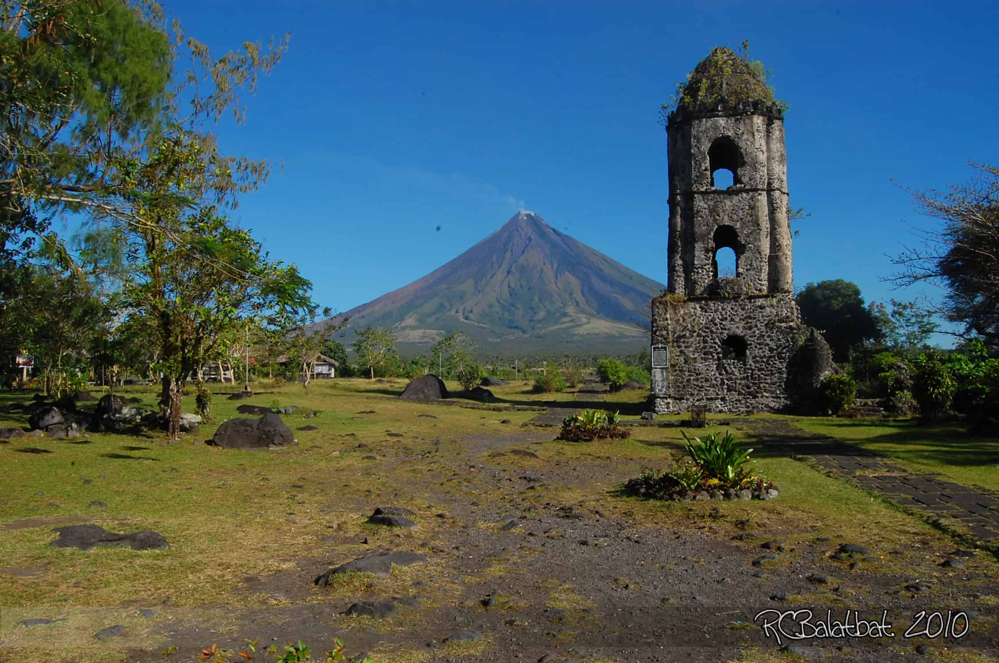

Luzon 1 / 3

Rizal Park - Rizal Park, also known as Luneta Park or simply Luneta, is a historic urban park located in Ermita, Manila.
Luzon 2 / 3

The Banaue Rice Terraces are terraces that were carved into the mountains of Banaue, Ifugao, in the Philippines, by the ancestors of the Igorot people.
Luzon 3 / 3

Mayon, also known as Mount Mayon and Mayon Volcano, is an active stratovolcano in the province of Albay in Bicol Region, on the island of Luzon in the Philippines.
Visayas 1 / 3

Magellan's Cross Pavilion is a stone kiosk in Cebu City, Philippines.
The structure is situated on Plaza Sugbo beside the Basilica del Santo Niño It houses a Christian cross that was planted by explorers of the Spanish expedition of the first circumnavigation of the world,
led by Ferdinand Magellan, upon arriving in Cebu in the Philippines on April 21, 1521.
Visayas 2 / 3
Cebu Taoist Temple is a Taoist temple located in Beverly Hills Subdivision of Cebu City, Philippines. The temple is built by Cebu's substantial Filipino-Chinese community in 1972.
Visayas 3 / 3

The Chocolate Hills are a geological formation in the Bohol province of the Philippines.
There are at least 1,260 hills, but there may be as many as 1,776 hills spread over an area of more than 50 square kilometers.
They are covered in green grass that turns brown during the dry season, hence the name.
Mindanao 1 / 3
Lake Sebu, officially the Municipality of Lake Sebu, is a 1st class municipality in the province of South Cotabato, Philippines.
According to the 2020 census, it has a population of 81,221 people. The bestselling Lonely Planet described Lake Sebu as a place located in a “bowl of forests and mountains.”
Mindanao 2 / 3
Maria Cristina Falls is a waterfall of the Agus River in the Northern Mindanao region of the Philippines.
It is sometimes called the "twin falls" as the flow is separated by a rock at the brink of the waterfall.
Mindanao 3 / 3

Mantigue is a small island located about 3.5 kilometres off the coast of volcanic island province of Camiguin province in the Philippines.
Also known as Magsaysay Island, it is about 4 hectares of greenery fringed with a gleaming white beach of powdery coral sand.